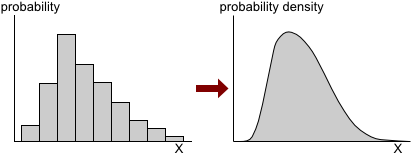

Although recorded values of a continuous variable are always rounded to some number of decimals, making the number of possible recorded values of these variables finite, the underlying measurement has an uncountable number of possible values.
Probabilities for individual values
For continuous random variables, all individual values have effectively zero probability.
Probability for a specific value of X
If a random variable, \(X\), has a continuous distribution,
\[ P(X=x) \;=\; 0 \qquad \text{for all } x \](Proved in full version)
Probabilities are still used to describe the distribution, but we need to find a way to describe the probabilities for events, such as \((2 \lt X \lt 3)\), not individual outcomes such as \((X = 2.5)\).
Probability density functions
A probability density function (pdf) is used to describe a continuous random variable's distribution. It is closely related to a histogram, but with infinitely narrow histogram classes.(It is scaled to have area one.)

A random variable's probability density function is usually a smooth function and is often described by a mathematical function,
\[f(x)\]The properties of probability density functions are fully described in a later chapter. At this stage, we just informally introduce some of the ideas.